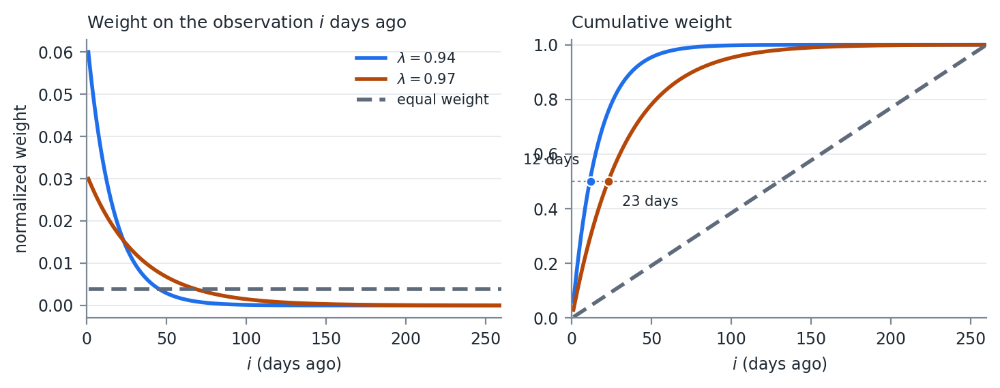
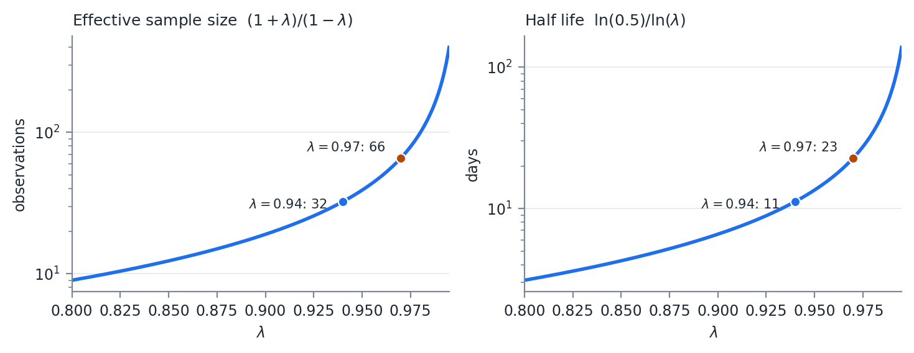

FinTech 545 — Week 03
Week 01 and Week 02 gave us distributions we can write down. Almost nothing we actually hold is one of them.
A portfolio of options on correlated assets has a P&L distribution with no closed form, and no amount of algebra will produce one.
Simulation replaces the algebra. Draw the inputs from a distribution we do understand, push each draw through the function, and read the answer off the resulting sample.
The answer is itself a random variable.
Every number produced this way carries simulation error, and that error falls as 1/\sqrt{K} in the number of draws.
Four times the draws to halve the error. Report a simulated number without knowing its simulation error and you are reporting noise to two decimal places.
Drawing univariate random numbers is easy. Most packages have a random function, and many allow a distribution to be specified.
Sometimes only the uniform on (0,1) is available. The quantile function turns that into a draw from anything.
F(x) = P(X \leq x) = \int_{lb}^{x} f(t)\, dt
The quantile function is its inverse, F^{-1}(p): the value of x such that F(x) = p.
The CDF is monotonic and defined between (0,1), so the quantile function gives a 1:1 mapping from (0,1) into the range of the distribution.
x = F^{-1}(u), \quad u \sim U(0,1)
This converts any distribution with a computable quantile function into a draw, using only a uniform generator.
It is also the mechanism behind the copula in Week 05, where we run the transform in both directions: CDF to get to uniforms, inverse CDF to get back out.
One variable at a time is not the problem we have. Recall from last week, if X is multivariate normal
X \sim N(\mu, \Sigma)
there exists
\mu \in \mathbb{R}^{n},\ L \in \mathbb{R}^{n \times m} \quad \text{such that} \quad X = LZ + \mu
where
Z_i \sim N(0,1), \quad i \in [1,m], \qquad \Sigma = LL'
To simulate K draws from an N variable multivariate normal:
Each series is on the row without the transpose. We think of tables as columns of values, so the transpose puts the matrix into a data table format.
Steps 2 and 3 are a random number call and a matrix multiply.
Producing an L from a covariance matrix estimated on real data is where the work is, and where the failures are.
A lot of packages have a multivariate normal generator. With the data problems we are about to hit, knowing how to generate your own is necessary.
The most used factorization of \Sigma. It applies to positive definite matrices, and the factor L is lower triangular.
Sometimes called the Cholesky root, because the factor is analogous to a square root.
Roughly 2x more efficient to calculate than the LU factorization, which is why it is the one that gets used.
If the matrix is only PSD, the root can still be calculated allowing for a column of zeros. The number of non-zero columns is the rank of the matrix.
A is symmetric and PD, L is lower triangular, A = LL'. Multiply the two triangular matrices, match entries, and every element of L falls out:
L_{jj} = \sqrt{A_{jj} - \sum_{k=1}^{j-1} L_{jk}^2}
L_{ij} = \frac{1}{L_{jj}}\left( A_{ij} - \sum_{k=1}^{j-1} L_{ik} L_{jk} \right), \quad i > j
Nothing on the right hand side involves an unknown, which is why a single pass works.
A = \begin{pmatrix} 4 & 2 & -2 & 4\\ 2 & 10 & 5 & -1\\ -2 & 5 & 21 & 0\\ 4 & -1 & 0 & 15 \end{pmatrix}
Read as a covariance matrix, the variances are 4, 10, 21, and 15, and the implied correlations run from -0.22 to 0.52.
Column 1. The diagonal has no prior terms to subtract, so L_{11} = \sqrt{4} = 2. Divide the rest of the column by it:
L_{21} = \tfrac{2}{2} = 1, \qquad L_{31} = \tfrac{-2}{2} = -1, \qquad L_{41} = \tfrac{4}{2} = 2
Column 2. Subtract the squares already placed in row 2, then divide:
L_{22} = \sqrt{10 - 1^2} = 3
L_{32} = \frac{5 - (-1)(1)}{3} = 2, \qquad L_{42} = \frac{-1 - (2)(1)}{3} = -1
L_{33} = \sqrt{21 - (-1)^2 - 2^2} = \sqrt{16} = 4
L_{43} = \frac{0 - (2)(-1) - (-1)(2)}{4} = 1
L_{44} = \sqrt{15 - 2^2 - (-1)^2 - 1^2} = \sqrt{9} = 3
L = \begin{pmatrix} 2 & 0 & 0 & 0\\ 1 & 3 & 0 & 0\\ -1 & 2 & 4 & 0\\ 2 & -1 & 1 & 3 \end{pmatrix}
Multiply LL' and confirm you recover A. Work this by hand once.
Every failure mode in the rest of this week is a failure of one of those four square roots or one of those six divisions.
Most linear algebra libraries run this algorithm on blocks of the matrix.
The dot products become matrix multiplications, the division becomes a matrix inverse, and the square root is a single threaded Cholesky call.
Block size is chosen from CPU cache size, and vector operations handle the multiplications.
If the matrix is PSD rather than PD, the algorithm breaks down.
At least one root diagonal element is 0. The column calculation then fails when we divide by it.
The patch: set every value in that column to 0.
LL' still reproduces \Sigma exactly, and the simulation still runs.
The Cholesky failing is a property of the PD algorithm, not of the matrix.
A zero column means one fewer independent random number driving the system.
Simulating N variables from a rank M matrix gives draws that all lie inside an M dimensional subspace. No simulated scenario can ever produce a pattern outside it.
Week 09 is built on that observation.
Missing values are very common in finance.
Not all markets are open at the same time on the same days, and a holiday in one market is not a holiday in another, even in the same country.
Take three assets on three trading calendars over ten days, and ask what the covariance matrix is estimated from.
| Date | Asset A | Asset B | Asset C |
|---|---|---|---|
| 1 | X | X | |
| 2 | X | X | X |
| 3 | X | X | |
| 4 | |||
| 5 | X | ||
| 6 | X | X | X |
| 7 | X | X | X |
| 8 | X | X | |
| 9 | X | X | X |
| 10 | X | X |
Overlapping rows only.
Pairwise. Find the matching rows for each pair and build the matrix piece by piece.
Method 1 keeps 4 rows out of 10 and returns a matrix guaranteed to be PSD.
Method 2 uses 6 rows for the A-B pair and returns a matrix that may not be.
Each entry of a pairwise matrix is estimated from a different sample, so the entries are not required to be mutually consistent.
A set of mutually inconsistent correlations is exactly what a negative eigenvalue is. Nothing here is a rounding problem.
The rank problem comes from the correlation estimation, not from the variances.
Splitting the problem lets each piece use the data it can, and it isolates the rank problem in the correlation matrix where the repair algorithms operate.
\Sigma = D\, C\, D, \quad D = \operatorname{diag}(\sigma_1, \dots, \sigma_n)
A full-history variance for each variable survives whatever was done to C.
When we break the assumption of normality and we have what look like outliers to the normal distribution, the Pearson coefficient may not be the best estimator of correlation.
We return to this in a few weeks.
JP Morgan was one of the first banks to use exponentially weighted covariance matrices in their risk analytics, starting in the late 1980s.
Their risk management was considered some of the best in the industry, and they spun out a software and consulting company called RiskMetrics.
\sigma_t^2 = \lambda \sigma_{t-1}^2 + (1-\lambda)\left( x_{t-1} - \bar{x} \right)^2
A simple exponential smoothing model. The variance for tomorrow is updated from today’s forecast variance and today’s deviation from the mean.
Back substitute:
\sigma_t^2 = (1-\lambda) \sum_{i=1}^{\infty} \lambda^{i-1} \left( x_{t-i} - \bar{x} \right)^2
\lim_{n \to \infty} (1-\lambda) \sum_{i=1}^{n} \lambda^{i-1} = 1
so setting w_{t-i} = (1-\lambda)\, \lambda^{i-1} gives a weighted estimator over an infinite horizon.
We do not have an infinite horizon, so the weights are normalized to sum to 1:
\hat{w}_{t-i} = \frac{w_{t-i}}{\sum_{j=1}^{n} w_{t-j}}
\widehat{\sigma_t^2} = \sum_{i=1}^{n} \hat{w}_{t-i} \left( x_{t-i} - \bar{x} \right)^2
\widehat{\operatorname{cov}(x,y)} = \sum_{i=1}^{n} \hat{w}_{t-i} \left( x_{t-i} - \bar{x} \right)\left( y_{t-i} - \bar{y} \right)
Equal weighting the time series reduces to the MLE values from last week.
RiskMetrics research found \lambda = 0.97 was the best value across a number of asset classes.
Be careful with that number. 0.97 is the decay factor for monthly data. For daily data, which is what we use in this class, RiskMetrics used \lambda = 0.94.
Treat both as starting guides. They came from one firm’s data in the mid 1990s, across a particular set of asset classes, at a particular sampling frequency.
A more liquid market, a longer horizon, or a different use for the estimate can all justify moving off them. What the choice should not be is unexamined.

Normalized exponential weights over one trading year, against equal weighting
At \lambda = 0.94, half the total weight sits in the most recent 12 observations. At \lambda = 0.97 it takes 23. Equal weighting over the same 260 days puts half the weight in the most recent 130.
An equally weighted estimator built on n observations uses n observations. An exponentially weighted one does not, and the number it does use is worth computing.
n_{\text{eff}} = \frac{1}{\sum_i \hat{w}_i^2}
For equal weights, \hat{w}_i = 1/n, the sum is 1/n, and n_{\text{eff}} = n.
For exponential weights on an infinite horizon:
\sum_{i=1}^{\infty} \hat{w}_i^2 = (1-\lambda)^2 \sum_{i=1}^{\infty} \lambda^{2(i-1)} = \frac{(1-\lambda)^2}{1-\lambda^2} = \frac{1-\lambda}{1+\lambda}
n_{\text{eff}} = \frac{1+\lambda}{1-\lambda}, \qquad h = \frac{\ln(0.5)}{\ln(\lambda)}

Effective sample size and half life across the usable range of \lambda
At \lambda = 0.94, n_{\text{eff}} is 32 observations whether you feed the estimator one year of history or ten.
Adding data past roughly four half lives changes the estimate by less than the rounding on the way to the report.
Storing five years of returns to run a \lambda = 0.94 estimator is storage, not information.
And it gets steep exactly where people set \lambda.
Small changes in \lambda are not small changes in the estimator. Reporting \lambda to two decimals conceals that.
Estimation error scales with n_{\text{eff}}, not with n. The standard error of a volatility estimate is roughly \sigma / \sqrt{2 n_{\text{eff}}}.
That is about 12.5% of the estimate at \lambda = 0.94 and 8.7% at \lambda = 0.97.
A 20% volatility estimated at \lambda = 0.94 carries a standard error of about 2.5 volatility points. That is the price of responsiveness, and it is not small.
Every weight is strictly positive, so the matrix is not singular in exact arithmetic.
But the smallest eigenvalues are supported almost entirely by observations carrying vanishing weight.
A covariance matrix estimated at \lambda = 0.94 across more than roughly n_{\text{eff}} assets is numerically close to singular.
My opinion: on daily data, use at least a year of history. Then be honest with yourself that the estimate is built on a few weeks of it.
The recursion gives the answer directly. Today’s observation enters \sigma_t^2 with weight exactly (1-\lambda): 6% at \lambda = 0.94, 3% at 0.97, 1% at 0.99.
Everything already in the estimate is scaled by \lambda, so a shock that entered k days ago retains \lambda^k of the weight it arrived with.
Put a 5 standard deviation day through it. The squared observation is 25\sigma^2:
\sigma^2_{\text{new}} = \lambda \sigma^2 + (1-\lambda)\, 25\sigma^2 = \sigma^2\left( \lambda + 25(1-\lambda) \right)
| \lambda | Weight today | Volatility after a 5\sigma day | Half life |
|---|---|---|---|
| 0.90 | 10% | \times 1.87 | 7 days |
| 0.94 | 6% | \times 1.56 | 11 days |
| 0.97 | 3% | \times 1.31 | 23 days |
| 0.99 | 1% | \times 1.11 | 69 days |
The same event moves a \lambda = 0.90 estimate by 87% and a \lambda = 0.99 estimate by 11%, and the faster estimate then forgets it ten times sooner.
A fast \lambda tracks a regime change within a week and produces limit breaches on days when nothing happened.
A slow \lambda is stable and will still be reporting last month’s calm in the middle of a crisis.
Pick based on what the number is for. A risk limit that triggers trading wants responsiveness. A capital calculation wants stability.
Whatever you pick, say what it is. An unstated \lambda makes two volatility numbers incomparable even when they were computed from the same returns.
\sigma_t^2 = \omega + \sum_{i=1}^{p} \alpha_i \epsilon_{t-i}^2 + \sum_{i=1}^{q} \beta_i \sigma_{t-i}^2
Set (p,q) = (1,1), \omega = 0, \alpha = (1-\lambda), and \beta = \lambda.
The RiskMetrics estimator is a GARCH(1,1) sitting exactly on the \alpha + \beta = 1 boundary.
With \alpha + \beta = 1 the long term variance is undefined.
There is no level to revert to, so the k step ahead forecast is today’s variance repeated forever, and any simulation that keeps updating will wander without bound.
Do not use long horizon simulation that updates the covariance matrix each period with this methodology.
GARCH with \alpha + \beta < 1 mean reverts to a fixed level, so when volatility shifts to a genuinely new regime the model fights the shift. The forecast keeps decaying back toward the old level.
The exponentially weighted estimator has no old level to decay toward, so it absorbs the shift permanently.
Clustered spikes are what GARCH was built to describe. Persistent level shifts are what the exponentially weighted estimator handles better.
Lamoureux and Lastrapes (1990) make the point from the other direction.
Ignoring structural breaks in the unconditional variance biases the estimated \alpha + \beta upward toward 1.
So the persistence of 0.95 to 0.99 typically fitted on daily equity data is partly an artifact of regime shifts the model does not represent.
Neither estimator observes the regime.
Both learn only through squared returns, at speed \alpha for GARCH and (1-\lambda) for the exponentially weighted estimator. Typical values are 0.05 to 0.10 against 0.06.
The advantage is in the forecast, not in the detection. The same refusal to revert also means a one off spike stays in the estimate long after it should have gone.
A true PSD matrix can still produce a slightly negative eigenvalue in finite precision, which makes one of the root diagonals complex.
It is generally fine to check for and set to 0 slightly negative values before attempting the square root. Negative values too large to be floating point error need different treatment.
There is no clean threshold.
An eigenvalue at -10^{-16} times the largest eigenvalue is arithmetic.
An eigenvalue at -0.05 times the largest is a statement that the data are mutually inconsistent, and zeroing it silently changes the matrix.
Rebonato and Jackel (1999) present two methods for finding an acceptable PSD matrix. The spectral decomposition method is the straightforward one.
First, decompose the correlation matrix:
C S = S \Lambda, \quad \Lambda = \operatorname{diag}(\lambda_i)
Second, clip the eigenvalues:
\Lambda' : \lambda_i' = \max(\lambda_i, 0)
Third, construct the diagonal scaling matrix
T : t_i = \left[ \sum_{j=1}^{n} s_{i,j}^2 \lambda_j' \right]^{-1}, \quad T = \operatorname{diag}(t_i)
T is what restores the unit diagonal. Zeroing eigenvalues shrinks the rows, and without the rescaling the result would no longer be a correlation matrix.
B = \sqrt{T}\, S\, \sqrt{\Lambda'}, \qquad BB^T = \hat{C} \approx C
where \sqrt{\ } denotes the element wise square root.
This matrix is not necessarily the closest matrix to the original, by whatever definition of closest you choose.
It is a good starting point, and often it is good enough.
Rebonato and Jackel also present an optimization algorithm in their paper, which we do not cover.
Higham (2002) presents an iterative algorithm for finding the nearest PSD correlation matrix. This method is used widely.
Find A minimizing
\gamma(A) = \|A - C\|
subject to A being PSD. The norm used is generally Frobenius:
\|A\|_F = \sqrt{\sum_{i=1}^{n} \sum_{j=1}^{n} a_{i,j}^2}
Weights can be applied by two methods. We assume a diagonal weight matrix W, and unweighted means W = I.
\|A\|_W = \left\| W^{\frac{1}{2}} A\, W^{\frac{1}{2}} \right\|_F
Higham proposes Algorithm 3.3, which alternates two projections until the norm converges.
P_U(A) = A - W^{-1} \operatorname{diag}(\theta_i) W^{-1}
where \theta solves \left( W^{-1} \# W^{-1} \right)\theta = \operatorname{diag}(A - I), and # is element wise multiplication.
With W diagonal this collapses to
p_{i,j} = a_{i,j}\ \ \forall\ i \neq j, \qquad p_{i,j} = 1\ \ \forall\ i = j
P_U is the easy projection. It sets the diagonal back to 1 and leaves everything else alone.
P_S(A) = W^{\frac{-1}{2}}\left( \left( W^{\frac{1}{2}} A\, W^{\frac{1}{2}} \right)_{+} \right) W^{\frac{-1}{2}}
(A)_{+} = S \operatorname{diag}(\max(\lambda_i, 0)) S^T
The eigenvalue system with negative eigenvalues set to 0. The same clip as Rebonato and Jackel, without the rescaling.
Neither projection alone gives a correlation matrix.
P_S makes the matrix PSD and breaks the unit diagonal.
P_U fixes the diagonal and can break the PSD property.
Alternating between them converges to a matrix in both sets.
\Delta S_0 = 0,\ \ Y_0 = A,\ \ \gamma_0 = \max\ \text{Float}
\text{Loop } k \in 1 \dots \max\ \text{Iterations}
\quad R_k = Y_{k-1} - \Delta S_{k-1}
\quad X_k = P_S(R_k)
\quad \Delta S_k = X_k - R_k
\quad Y_k = P_U(X_k)
\quad \gamma_k = \gamma(Y_k)
\quad \text{if } |\gamma_k - \gamma_{k-1}| < tol \text{ then break}
The \Delta S term is what makes this work.
Plain alternating projections converge to some point in the intersection of the two sets.
The correction is what makes the limit the nearest one.
Check the smallest eigenvalue of the result. If it is significantly negative, run the algorithm on the result.
You need a result your Cholesky function can process.
Convergence of the norm is not the same as the answer being usable, and the tolerance you set on \gamma says nothing directly about the smallest eigenvalue.
Check the eigenvalue, not the norm.
PCA gives us another way to simulate a system.
The Rebonato and Jackel methodology used to adjust a non-PSD matrix is simply PCA, removing the negative eigenvalues.
PCA projects the system into an orthogonal space. It gives a linear transform of independent random variables into a correlated multivariate distribution.
It is also the standard tool for reducing the dimensionality of the problem.
C = S \Lambda S^T
S are the eigenvectors, \Lambda is the diagonal matrix of eigenvalues.
Take the square root of the eigenvalues into \Lambda^{\frac{1}{2}}:
C = \left[ S \Lambda^{\frac{1}{2}} \right]\left[ \Lambda^{\frac{1}{2}} S^T \right]
B = \left[ S \Lambda^{\frac{1}{2}} \right] \Rightarrow C = BB^T
The requirement has not changed:
X = LZ + \mu, \qquad Z_i \sim N(0,1), \qquad \Sigma = LL'
B satisfies that last line, so set L = B and the multivariate draw algorithm runs unchanged.
Cholesky and PCA are two ways of answering the same question. Nothing about the simulation cares which one produced the root.
The Cholesky is preferred for a full rank system. Being triangular, it takes fewer floating point operations.
If the matrix is PSD there are m non-zero eigenvalues, with m \leq n.
Drop the zero eigenvalues from \Lambda and the corresponding columns from S.
To simulate N values we now generate only M random numbers.
This is the same rank deficiency as the zero columns in the Cholesky, handled explicitly rather than patched. Both produce a valid \Sigma = BB'. Neither recovers information that was never in the matrix.
Sort the m non-zero eigenvalues largest to smallest:
L = \left[ \lambda_1,\ \lambda_2,\ \dots,\ \lambda_m \right] \ \forall\ \lambda_i \geq \lambda_j,\ i < j
The percentage of variance explained by the first K:
\text{Pct Explained}(K) = \frac{\sum_{i=1}^{K} L_i}{\sum_{j=1}^{m} L_j}
The larger the eigenvalue, the more impact it has on the total system.
Not a repair.
Every dropped component is a direction the simulation can no longer move in.
The forecast variance of any portfolio sitting in that direction is exactly zero.
Week 09 shows what that looks like when it goes wrong.
At the heart of most modeling is getting to an error variable that is independent and identically distributed.
Every model in Week 02 existed to strip structure out of a series until what was left satisfied the OLS error assumptions.
Here we run the same machinery backwards: simulate the iid errors, then push them through the model to rebuild the series.
n variables X, an information matrix \Omega used for modeling, and normally distributed errors \epsilon.
x_{i,t} = f_i\left( \Omega_t,\ \epsilon_{i,t} \right)
Because \epsilon_i \sim N(0, \sigma_i^2)\ iid, the system of errors is jointly normal:
\epsilon \sim N(0, \Sigma)
The models are separate but the errors are not. Two stocks each carrying their own ARMA still move together, and \Sigma is where that co-movement lives.
If we do not know all elements of \Omega_t, then either simulate them through their own model, or assume a value for them.
Often some x_i depends on other elements of X. Order the models so the independent ones are evaluated first.
A circular pattern, where A depends on B, which depends on C, which depends on A, needs an iterative solver. We do not deal with it in this class.